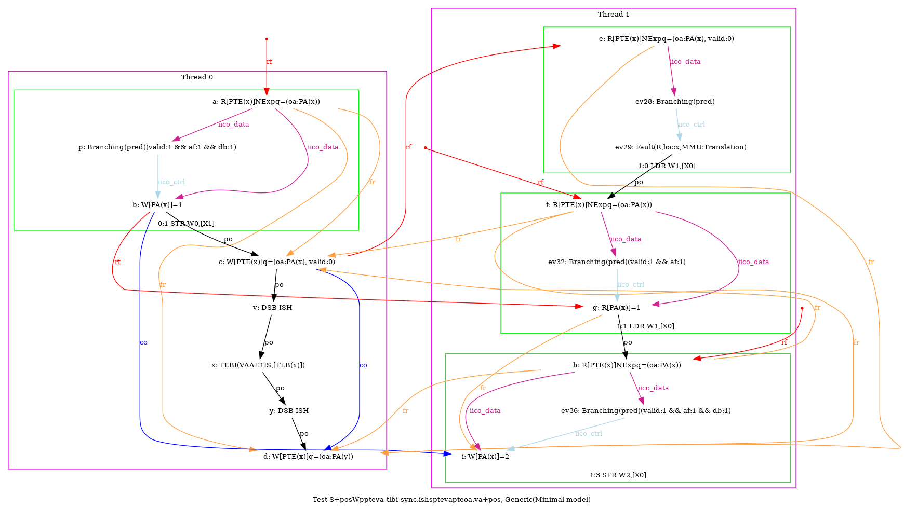
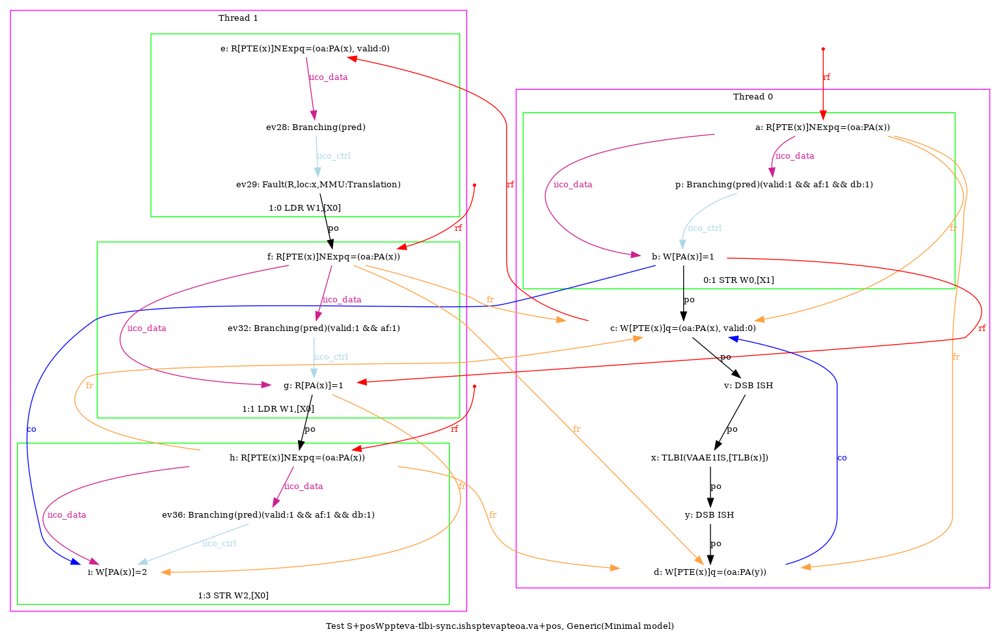
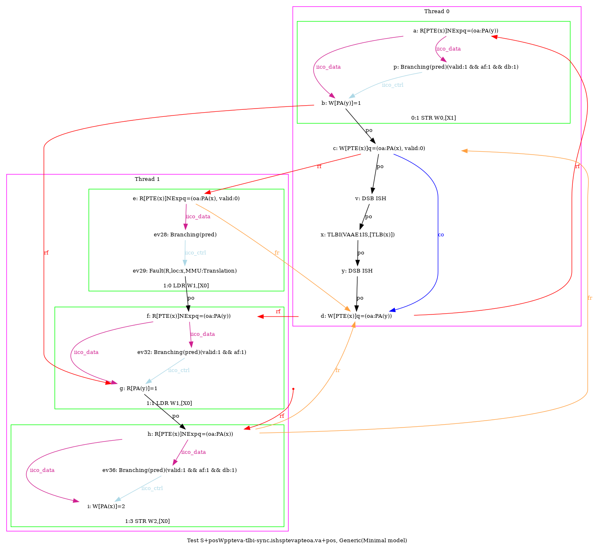
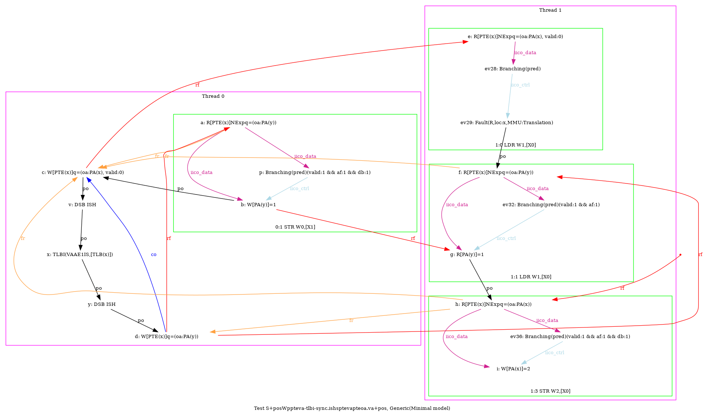

   …
AArch64 S+posWppteva-tlbi-sync.ishsptevapteoa.va+pos
"PosWWPPteVA TLBI-sync.ISHsWWPteVAPteOA.VA RfePteOA.VAP PosRW Coe"
Variant=imprecise
Cycle=Coe PosWWPPteVA TLBI-sync.ISHsWWPteVAPteOA.VA RfePteOA.VAP PosRW
Relax=[PteVA,TLBI-sync.ISHsWW,PteOA,PteVA]
Safe=Rfe Coe PosWW PosRW
Generator=diy7 (version 7.56+02~dev)
Com=Rf Co
Orig=PosWWPPteVA TLBI-sync.ISHsWWPteVAPteOA.VA RfePteOA.VAP PosRW Coe
{ int x=0; int y=4;
0:X1=x; 0:X2=PTE(x); 0:X3=(oa:PA(x), valid:0); 0:X4=(oa:PA(y));
1:X0=x;
}
P0 | P1 ;
MOV W0,#1 | LDR W1,[X0] ;
STR W0,[X1] | MOV W2,#2 ;
STR X3,[X2] | STR W2,[X0] ;
LSR X5,X1,#12 | ;
DSB ISH | ;
TLBI VAAE1IS,X5 | ;
DSB ISH | ;
STR X4,[X2] | ;
exists (1:X1=1 /\ [x]=2 /\ fault(P1,x) /\ ~fault(P0,x))